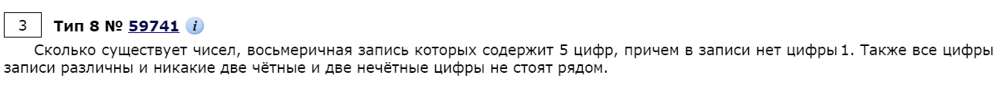
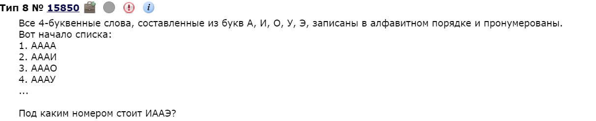
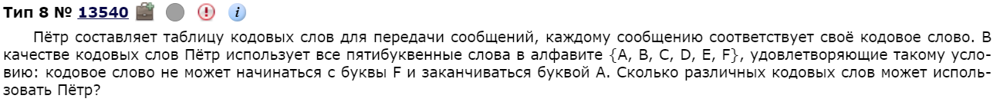
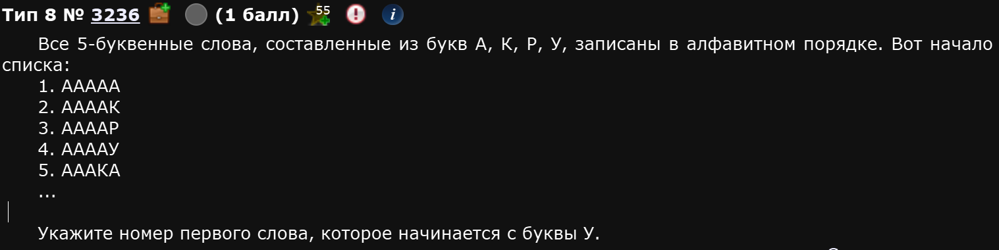
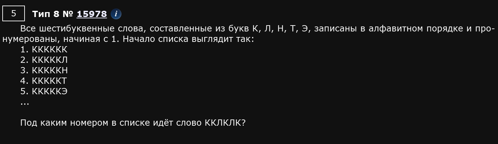
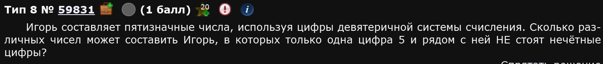
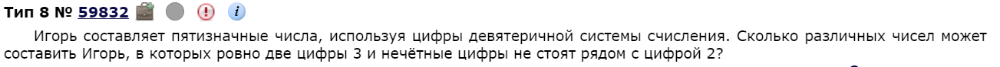
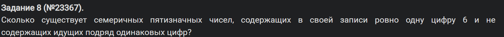

Это задание также можно делать ручками, а можно и прогать. Как удобно - так и делайте.
Пример 1

Начнем с куска базы. Восьмеричная запись числа - это цифры от 0 до 7. По условию, цифры 1 в записи быть не должно.
Остаются следующие цифры: 0, 2, 3, 4, 5, 6, 7
Рассмотрим два случая: когда число начинается с четной и нечетной цифры
Чет
| 4 варианта | 3 варианта | 3 варианта | 2 варианта | 2 варианта |
|---|---|---|---|---|
| Ч | Н | Ч | Н | Ч |
| Нечет |
| 3 варианта | 4 варианта | 2 варианта | 3 варианта | 1 варианта |
|---|---|---|---|---|
| Н | Ч | Н | Ч | Н |
Кол-во возможных вариантов - это перемножение всех возможных вариантов т.е. в первом случае - это , а во втором .
Нас спрашивают об общем числе вариантов. Следовательно, надо сложить.
Ответ: 216.
Пример 2

Это задание - настоящая классика ЕГЭ по информатике. Оно очень простое. Нам нужно понять, что раз всего букв, которые могут встретиться n, то все слова можно представить в виде чисел в, n системе счисления. В данном случае, букв 5, а значит слова можно представить в пятиричной системе счисления т.е. с цифрами 0, 1, 2, 3, 4. Таким образом, заменив буквы на цифры получим (начало списка):
1. 0000
2. 0001
3. 0002
4. 0003
Итд,,, А нам надо слово ИААЭ. Это слово можно представить в виде . Это почти ответ! Вспоминаем, что порядковые номера на единицу больше и получаем ответ.
Ответ: 130.
Пример 3

Ну тут собсна все просто. Раз нельзя юзать F вначале и A в конце, то, получается:
1 позиция: 5 вариантов
2 позиция: 6 вариантов
3 позиция: 6 вариантов
4 позиция: 6 вариантов
5 позиция: 5 вариантов
Осталось перемножить и получить ответ
Ответ: 5400
Пример 4
Задание аналогично одному из решенных, но условие слегка другое. Делаем также.
Глас:
Неглас:
Складываем, получаем ответ: 72
Решение кодом
Пример 5

На самом деле, 8ое задание прогой решается полным перебором в любом из возможных вариантов. Возьмем для примера эту задачу.
Идея в том, чтобы тупо написать все возможные слова и вручную найти нужное т.е. то, которое начинается с буквы у. Для этого придется задать алфавит, счетчик и число букв в словах:
alp = "АКРУ" #ВАЖНО: буквы пишем в том порядке, в котором они даны НЕ в тексте задания, а в самом списке, здесь они совпадают, но иногда - нет
c = 1 #Счетчик номера чисел
for l1 in alp: #Циклы букв. Их тут именно 5 потому, что, по условию слова 5-буквенные. Сколько букв - столько и циклов
for l2 in alp:
for l3 in alp:
for l4 in alp:
for l5 in alp:
word = l1 + l2 + l3 + l4 + l5 #Задаем само слово
print (c, word) #Принтуем сначала номер, потом слово
c += 1 #Накидываем счетчикПрограммка выдаст список из 1024 слов. 769 из них - это первое слово, которое начинается с буквы У.
Ответ: 769
В целом, этот алгоритм практически универсален. Посмотрим тот же прототип, но другой пример.
Пример 6

Собсна, велосипед не изобретаем, алфавит меняем, циклы расширяем. Единственное, что кол-во слов больше, около 15к, заебемся искать. Поэтому напишем доп условие прям в цикле:
alp = "КЛНТЭ"
c = 1
for l1 in alp:
for l2 in alp:
for l3 in alp:
for l4 in alp:
for l5 in alp:
for l6 in alp:
word = l1 + l2 + l3 + l4 + l5 + l6
if word == "ККЛКЛК": print (c, word)
c += 1Ответ: 131.
Пример 7
Также, в №8 есть те прототипы, которые будет сложно решить руками. Для них наш шаблон тоже подходит. Рассмотрим одно из таких:

Идея кода такая же, как и в предыдущих случаях - полный перебор. Меняются только условия. Тут нужно рассмотреть несколько важных случаев и составить дерево условий:
- Если 5 находится вначале числа (на первой позиции), то нужно проверить является ли число впереди него одним из нечетных т.е.
1, 3, 7. Если да - не засчитываем в ответ. - Если 5 находится на последней позиции числа, то нужно проверить является ли число на предпоследней позиции одним из нечетных т.е.
1, 3, 7. Если да - также не засчитываем в ответ. - Если 5 находится где-то в середине числа, то нужно проверить соседние числа, с индексом (позицией) на 1 больше и на 1 меньше, чем у 5. Если кто-то из них нечетный, то не засчитываем эту итерацию цикла в ответ.
- В остальных случаях - нас все устраивает, прибавляем счетчик
count += 1.
По итогу, получаем такой код:
alp = "012345678" # Девятеричная система
count = 0
for l1 in alp[1:]: # Первая цифра не может быть 0
for l2 in alp:
for l3 in alp:
for l4 in alp:
for l5 in alp:
number = l1 + l2 + l3 + l4 + l5
# Проверяем, что ровно одна цифра 5
if number.count("5") == 1:
continue
# Определяем позицию 5
index_5 = number.index("5")
# Проверяем условия для соседей
if index_5 == 0: # 5 в начале числа
if number[1] in "137":
continue
elif index_5 == 4: # 5 в конце числа
if number[3] in "137":
continue
else: # 5 внутри числа
if number[index_5 - 1] in "137" or number[index_5 + 1] in "137":
continue
count += 1
print(count)Ответ: 8880
Пример 8

Аналогично с 7ым примером, меняются только условия. В случае этого задания нужно 3 условия:
- Чтобы первое число не было равно 0, иначе число не будет восприниматься как пятизначное и мы получим неправильный ответ.
- Чтобы в числе было ровно 2 тройки.
- Чтобы никоим образом мы не встретили внутри числа одну из следующих комбинаций:
[12 21 23 32 52 25 72 27].
alp = '012345678'
count = 0
for l1 in alp:
for l2 in alp:
for l3 in alp:
for l4 in alp:
for l5 in alp:
number = l1 + l2 + l3 + l4 + l5
if number[0] != '0':
if number.count('3') == 2:
if all(x not in number for x in '12 21 23 32 52 25 72 27'.split()):
count += 1
print(count)Разберемся с третьим условием подробнее.
if all(x not in number for x in '12 21 23 32 52 25 72 27'.split()):Этот кусок кода проверяет, что в числе number нет запрещенных комбинаций "12", "21", "23", "32", "52", "25", "72", "27".
Это работает так: '12 21 23 32 52 25 72 27'.split() превращает строку в список: ['12', '21', '23', '32', '52', '25', '72', '27']. Затем, в for x in ['12', '21', '23', '32', '52', '25', '72', '27'] мы перебираем каждую запрещенную последовательность (x). x not in number: тут проверяем, содержится ли x в number. Если number = "12345", "12" есть в number, значит x not in number → ложь. Если number = "34567", "12" нет, значит x not in number → истина.
all([...]) проверяет, что все элементы списка дают True, т.е. ни одной запрещенной комбинации нет в числе.
Пример работы
Пример 1) (Запрещенная комбинация есть)
number = "12345"'12' in "12345"→True'21' in "12345"→False'23' in "12345"→True- Остальные комбинации не проверяются, так как
all([...])уже не выполняется. - Условие не проходит, число не учитывается.
Пример 2) (Все запрещенные комбинации отсутствуют)
number = "30456"'12' not in "30456"→True'21' not in "30456"→True'23' not in "30456"→True'32' not in "30456"→True'52' not in "30456"→True'25' not in "30456"→True'72' not in "30456"→True'27' not in "30456"→True- Все элементы вернули
True, значитall([...]) == True, и число засчитывается.
Таким образом, каждый из нас - булочка с корицей,,,
Ответ: 3352.
alp = "01234567"
c = 0
for l1 in "246":
for l2 in "357":
for l3 in "0246":
for l4 in "357":
for l5 in "0246":
word = l1 + l2 + l3 + l4 + l5
if l1 != l3 and l1 != l5 and l5 != l3 and l2 != l4:
c += 1
for l1 in "357":
for l2 in "0246":
for l3 in "357":
for l4 in "0246":
for l5 in "357":
word = l1 + l2 + l3 + l4 + l5
if l1 != l3 and l1 != l5 and l5 != l3 and l2 != l4:
c += 1
print(c)Пример 11)

digits = "0123456"
count = 0
for d1 in digits[1:]:
for d2 in digits:
for d3 in digits:
for d4 in digits:
for d5 in digits:
num = d1 + d2 + d3 + d4 + d5
if num.count('6') == 1 and all(num[i] != num[i+1] for i in range(4)):
count += 1
print(count)По поводу циклов
Если просят номер, то условие с букавками пишем под условием, а не под alp